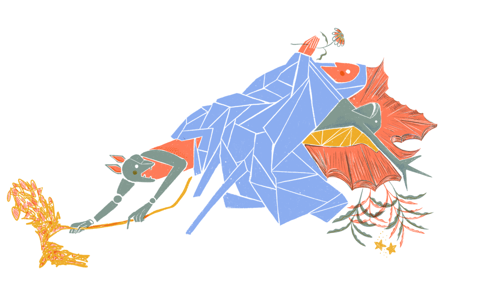

Hola, soy Lorena, fotógrafa y diseñadora gráfica. A lo largo de mi carrera, he trabajado en distintos campos creativos, lo que me ha llevado a adentrarme en el mundo de la obra gráfica. En este proceso, tanto la serigrafía como el grabado han sido fundamentales en mi trabajo. Estas técnicas, por su carácter artesanal, me han permitido crear ediciones numeradas de obras únicas, explorando la relación entre la imagen y la superficie, lo que me ha llevado a un proceso constante de experimentación, descubrimiento y evolución creativa.